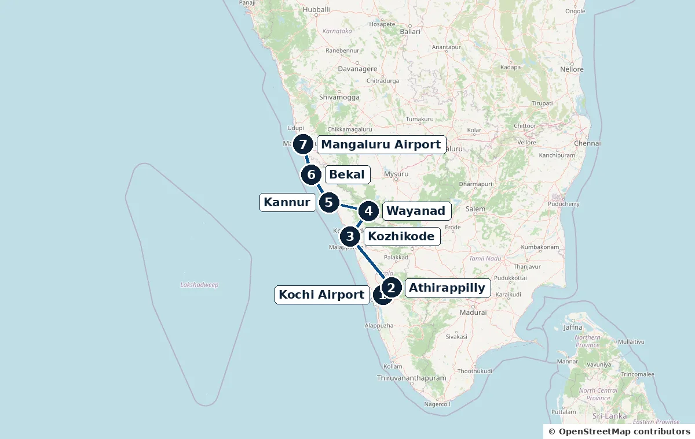
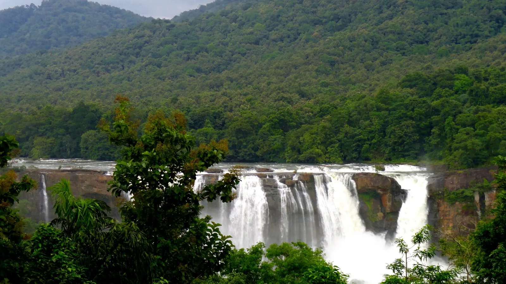
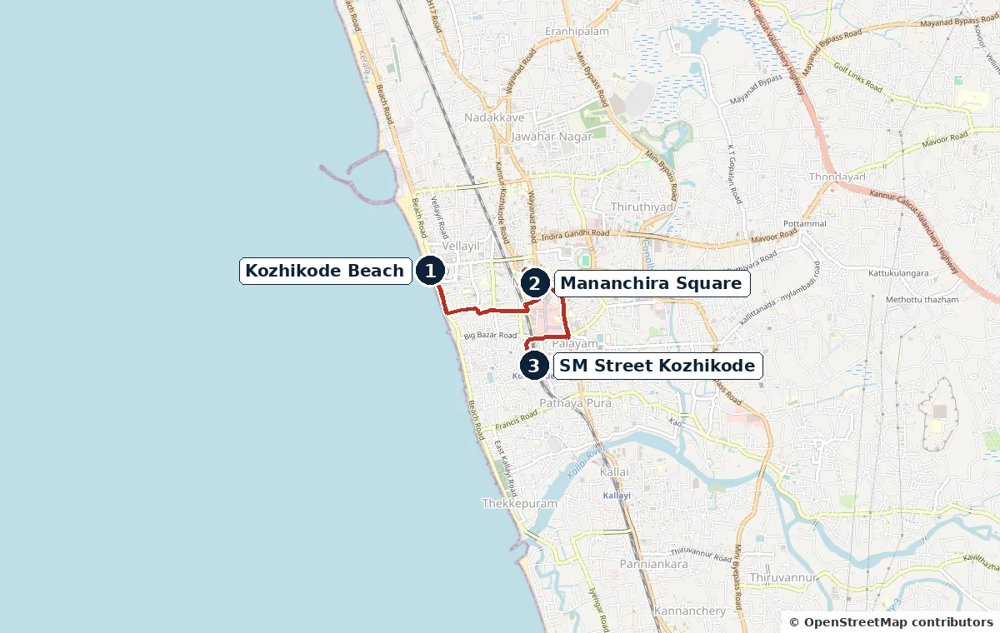
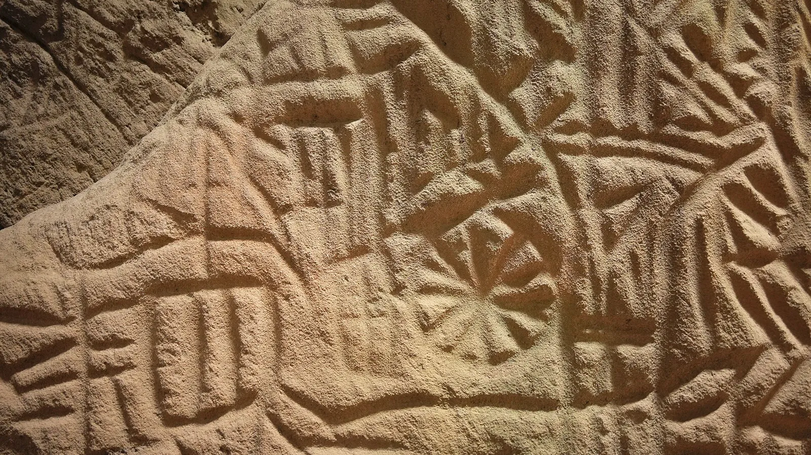
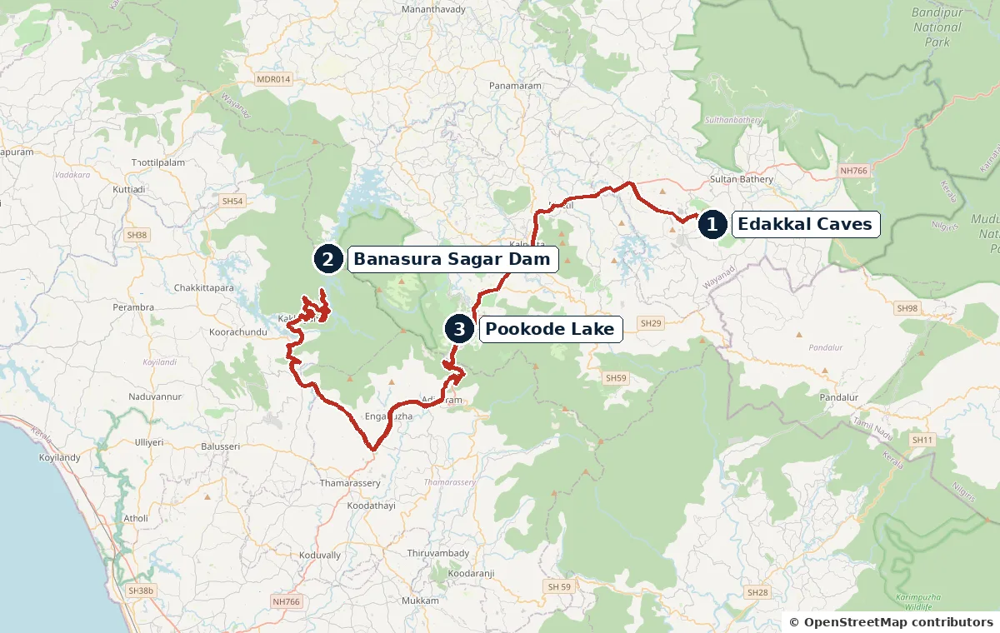
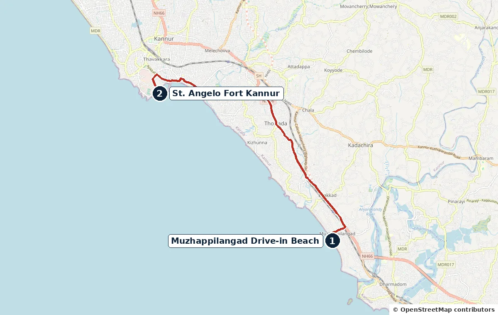
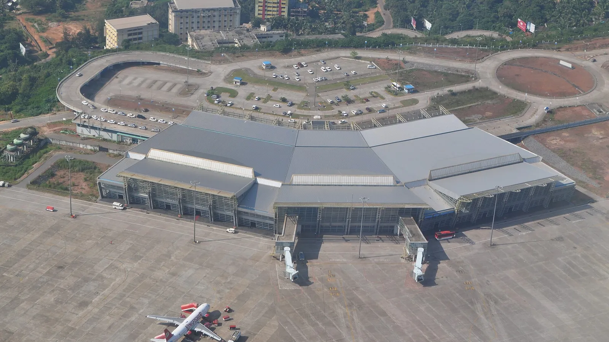

Most visitors to Kerala never go north of Kochi. This one-way route runs up the Malabar coast from Kochi airport to Mangaluru: India's widest waterfall at Athirappilly, the spice port of Kozhikode where Vasco da Gama landed, two nights in the green hills of Wayanad, the Theyyam ritual country around Kannur and the sea fort of Bekal. Drives are short, and there is no need to double back.
Trip highlights
- Athirappilly Falls, about 25 m high and the widest waterfall in Kerala
- Kozhikode beach at sunset and Kappad, where Vasco da Gama landed in 1498
- Edakkal Caves, with Neolithic rock carvings, and Banasura Sagar Dam in Wayanad
- Muzhappilangad, a 4 km drive-in beach near Kannur
- A Theyyam performance in a village shrine, in season
- Bekal Fort, one of the largest forts in Kerala, on the Arabian Sea
Your week at a glance
- Day 1Land in Kochi and drive to Athirappilly FallsArrival day
- Day 2Up the coast to KozhikodeTransfer day
- Day 3Kappad beach and up the ghat to WayanadTransfer day
- Day 4Edakkal Caves, Banasura Sagar and Pookode LakeFull day
- Day 5Down to Kannur and the drive-in beachTransfer day
- Day 6North to BekalTransfer day
- Day 7Bekal Fort and Kappil beachEasy day
- Day 8Bekal to Mangaluru airportDeparture

Route: Kochi Airport » Athirappilly » Kozhikode » Wayanad » Kannur » Bekal » Mangaluru Airport
Day-by-day itinerary
Land in Kochi and drive to Athirappilly Falls

- About 55 km, 1 hour 30 minutes
- Falls open 08:00 to 17:00
On landing · Kochi airport (COK)
Meet your driver
With a name sign at arrivals.
Afternoon
Athirappilly Falls
The Chalakudy River drops about 25 m over a wide rock face. Walk down to the base for the full view, about 20 minutes each way.
CARERocks near the water are slippery. Stay behind the barriers, especially in the monsoon.
Optional
Vazhachal Falls
A second cascade 5 km upstream.
On the mapAthirappilly FallsVazhachal Falls
Up the coast to Kozhikode

- About 170 km, 4 to 5 hours
Morning
Drive north
Via Thrissur, where you can stop at the Vadakkunnathan temple from outside.
WEARMost Kerala temples admit Hindus only. Men remove shirts inside, women wear saree or salwar.
Evening
Kozhikode beach and Mananchira Square
Sunset at the old lighthouse, then the square and its large temple tank.
EATKozhikode is famous for halwa on SM Street (Mittai Theruvu) and banana chips fried in coconut oil.

Today's route
- Kozhikode Beach
- Mananchira Squareabout 2 km by road
- SM Street Kozhikodeabout 2 km by road
On the mapKozhikode BeachMananchira SquareSM Street Kozhikode
Kappad beach and up the ghat to Wayanad

- About 90 km, 3 hours
- Wayanad about 700 to 900 m
Morning
Kappad beach
A stone pillar marks where Vasco da Gama landed in 1498.
Afternoon
Thamarassery ghat and Lakkidi viewpoint
Nine hairpin bends up to the Wayanad plateau. The Chain Tree is a short stop by the road.
Evening
Check in at your plantation resort
Coffee, pepper and cardamom estates around the resort.
Edakkal Caves, Banasura Sagar and Pookode Lake

- Edakkal closed Mondays
- Climb about 1 km to the caves
- Drives about 3 hours in total
About 09:00
Edakkal Caves
Rock shelters on Ambukuthi Mala with carvings thousands of years old. A steep path and steps, about 45 minutes up.
TIMEOpen about 09:00 to 16:00 and closed on Mondays. Daily visitor numbers are capped, so arrive early.
CARENot suitable for people with knee or heart problems.
Optional · Ambalavayal
Wayanad Heritage Museum
Tribal tools, weapons and stone carvings, 10 minutes from Edakkal.
Afternoon
Banasura Sagar Dam
India's largest earth dam, with speedboat rides among small islands.
Late afternoon
Pookode Lake
A natural freshwater lake in the forest with pedal boats, near your resort.

Today's route
- Edakkal Caves
- Banasura Sagar Damabout 99 km by road
- Pookode Lakeabout 62 km by road
On the mapEdakkal CavesWayanad Heritage MuseumBanasura Sagar DamPookode Lake
Down to Kannur and the drive-in beach

- About 100 km, 3 hours
Morning
Down the Periya ghat
Through coffee estates to the coast.
Afternoon
Muzhappilangad drive-in beach
A 4 km firm sand beach where cars can drive along the waterline.
Evening
Theyyam (seasonal)
From about November to May, village shrines around Kannur stage Theyyam, a ritual dance in which the performer becomes the deity. We find the night's performance for you.
WEARThis is worship, not a show. Dress modestly, stay at the edge and do not use flash.

Today's route
- Muzhappilangad Drive-in Beach
- St. Angelo Fort Kannurabout 14 km by road
On the mapMuzhappilangad Drive-in BeachSt. Angelo Fort Kannur
North to Bekal

- About 90 km, 2 hours 30 minutes
Morning
St Angelo Fort, Kannur
A Portuguese fort from 1505 on the sea.
Afternoon
Arrive Bekal
Check in and relax by the sea.
On the mapSt. Angelo Fort KannurBekal
Bekal Fort and Kappil beach

- Fort open about 08:00 to 17:30
Morning
Bekal Fort
A keyhole-shaped laterite fort of about 1650 with an observation tower over the sea.
TIMEGo before 10:00 for softer light and fewer people.
Afternoon
Kappil beach
Palm groves and a quiet beach.
Optional
Valiyaparamba backwaters
A houseboat or country-boat cruise on North Kerala's largest backwater, about 30 km away.
Bekal to Mangaluru airport

- About 70 km, 1 hour 30 minutes to 2 hours
After breakfast
Drive to Mangaluru (IXE)
Into Karnataka on the coastal highway.
TIMELeave 4 hours before your flight.
On the mapMangalore International Airport
Where you stay
Hand-picked resorts at each stop
Rainforest lodges at Athirappilly, plantation resorts in Wayanad and beach resorts at Bekal. Premium options include Taj Bekal and Vythiri Village in Wayanad.
What's included
- 7 nights in the resorts listed or similar
- Daily breakfast
- Private air-conditioned car from Kochi to Mangaluru
- 24/7 support from Blue Diamond Voyage
Not included
- Flights
- Entry fees, boating and cave tickets
- Theyyam offerings
- Lunches and dinners
- Travel insurance
Visa, entry and phones
| Permit | What it is | Who | Cost |
|---|---|---|---|
| Photo ID | Aadhaar, passport, driving licence or voter ID for flights, trains and hotel check-in | Indian citizens | — |
| Indian e-Visa | Tourist e-Visa applied online before travel | Foreign nationals (not OCI holders) | Varies by nationality |
| Monument tickets | Most ASI monuments sell tickets online and by UPI at the gate | Everyone | About INR 20 to 50 for Indians, more for foreigners |
- Carry the original photo ID, not a photocopy. Security at airports and many temples checks it.
- Phone and internet: Jio and Airtel work best across most of this route. Download offline Google Maps before hill or forest stretches, where signal drops.
NOTEWhen you book, we arrange the paperwork with you and share every document on your trip's WhatsApp group before departure.
Good to know
UPI, cards and cash
UPI works almost everywhere, even at small stalls. Keep some cash in INR 100 and 200 notes for temples, parking, tips and places where the network is weak.
Temple and shrine etiquette
Cover shoulders and knees. Remove shoes where asked, and carry socks for hot stone floors. Leather belts and bags are not allowed inside some Jain and Hindu temples. Ask before photographing people and inside shrines.
Water and street food
Drink sealed bottled or filtered water only. Choose busy stalls where food is cooked in front of you, and skip cut fruit and ice from roadside stalls.
Driving times
Indian roads are slower than the kilometres suggest: plan on 40 to 50 km an hour on highways and much less in hills and towns. Your driver's breaks and meal stops are built into the timings.
Plugs and tipping
Plugs are Indian three-pin and two-pin, 230 volts. Tipping drivers and guides about INR 300 to 500 a day is appreciated.
In an emergency
All emergencies (India) 112 (police 100, ambulance 108)
Tourist helpline 1363 (Ministry of Tourism, 24 hours, multilingual)
Blue Diamond Voyage 24/7 +91 98242 21400 and +91 97148 59797
Best time to go
October to March: dry, green and about 22° to 32°. Theyyam season runs from about November to May. The monsoon (June to September) is lush but rough at sea, and ghat roads see landslides.
| October to March | Best | Dry and pleasant, about 22° to 32°; cool nights in Wayanad. |
| April to May | Good | Hot and humid on the coast, about 34°; Theyyam continues. |
| June to September | Monsoon | Heavy rain, waterfalls at full flow, beaches closed for swimming. |
Frequently asked questions
Why does the tour end in Mangaluru, not Kochi?
Bekal is about 70 km from Mangaluru but over 350 km from Kochi. Flying home from Mangaluru saves a full day of driving.
Can we see Theyyam?
Yes, from about November to May. Performances follow the temple calendar, so we confirm the nearest one a few days before.
Is Wayanad safe after the 2024 landslides?
The landslides struck the Mundakkai and Chooralmala area. The rest of Wayanad, including Kalpetta, Vythiri, Edakkal and Banasura, is open. We avoid hill areas after very heavy rain.
Can this itinerary be changed for our dates and pace?
Yes. Every Blue Diamond Voyage itinerary is a starting point. We change the number of nights, the hotels, the pace and the activities to suit your family, and send you a personalised quote.
Do you look after vegetarian and Jain food?
Yes. We send your dietary brief to every hotel and guide before you travel, and suggest pure-vegetarian restaurants along the route. Jain meals without onion, garlic and root vegetables can be arranged in most places with notice.
Photo and map credits
- Day 1: Pranchiyettan, CC BY-SA 3.0, via Wikimedia Commons
- Day 2: Sulyab Thottungal, CC BY-SA 4.0, via Wikimedia Commons
- Day 3: Gannu03, CC BY-SA 4.0, via Wikimedia Commons
- Day 4: Ingo Mehling, CC BY-SA 4.0, via Wikimedia Commons
- Day 5: Shagil Kannur, CC BY 3.0, via Wikimedia Commons
- Day 6: Rajesh Kakkanatt, CC BY-SA 3.0, via Wikimedia Commons
- Day 7: Phadke09, CC BY-SA 4.0, via Wikimedia Commons
- Day 8: Premnath Kudva, CC BY-SA 3.0, via Wikimedia Commons
- Maps: © OpenStreetMap contributors; road routes by OSRM. Distances are by road; drive times on this page allow for local traffic.
Make this journey yours
Every Blue Diamond Voyage itinerary is a starting point. Tell us your dates, your city and how you like to travel, and we shape the hotels, the pace and the food around you. Timings and local details were checked on November 2026 and are reconfirmed for your dates when you book.